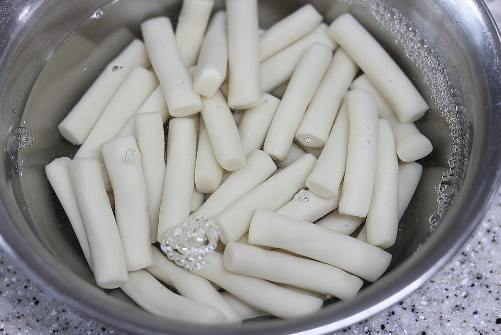
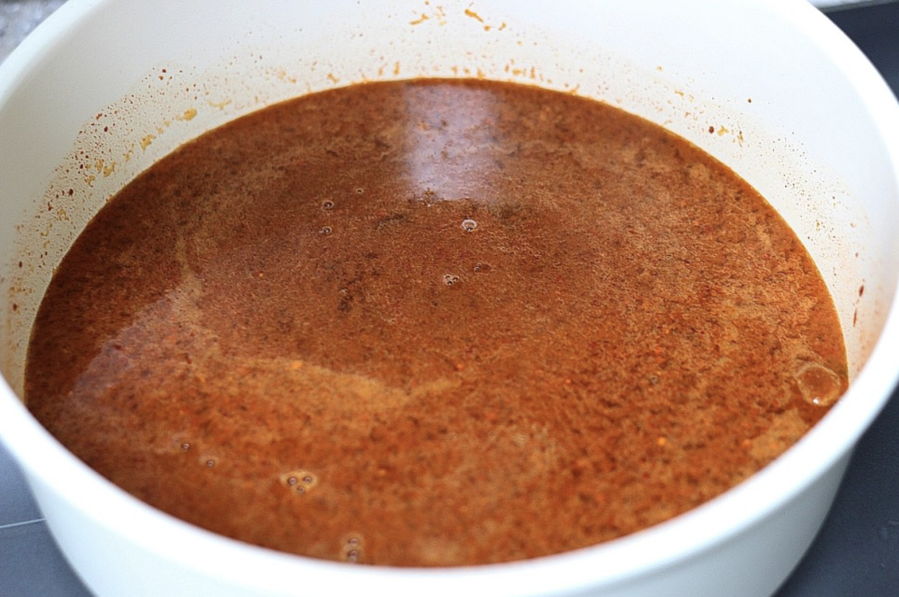
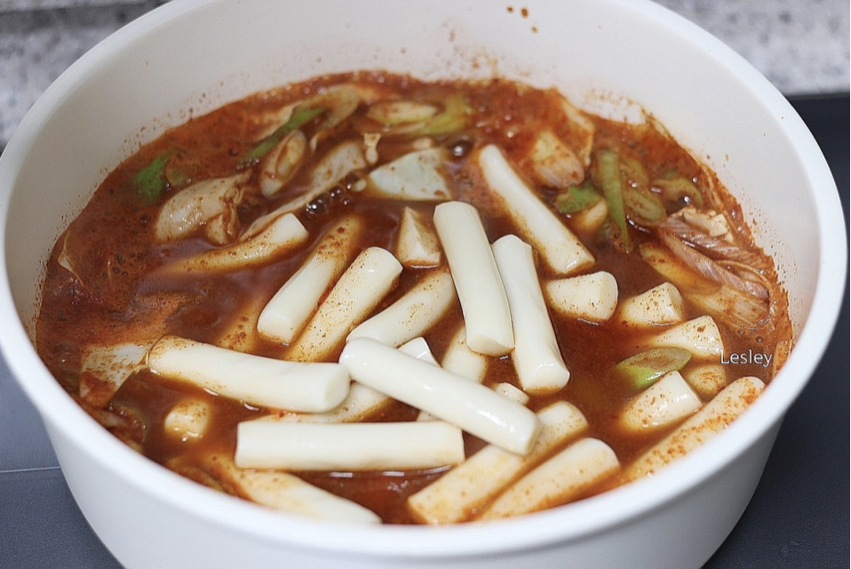
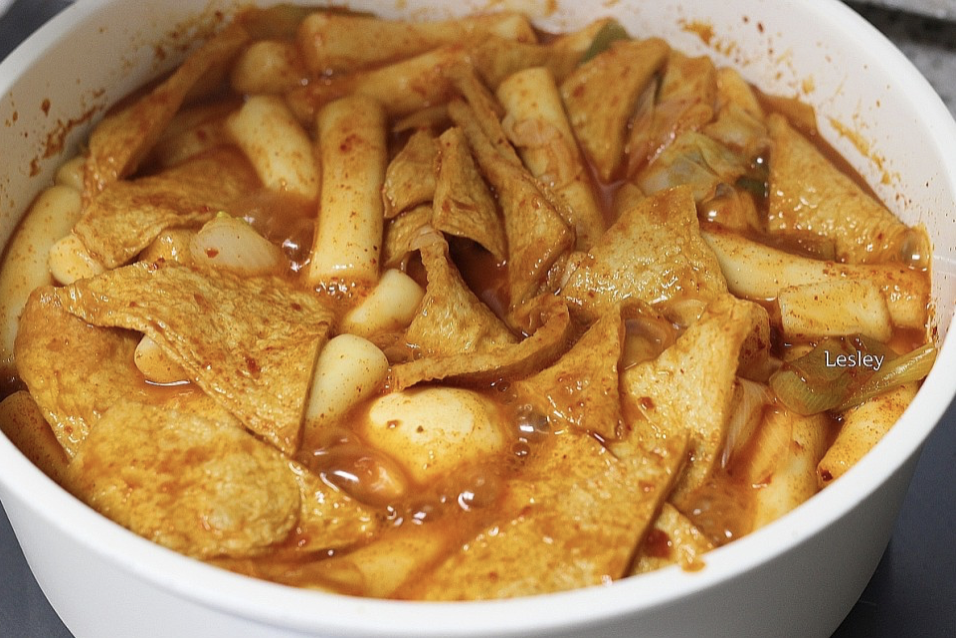

요리법
1)요리재료
재료 : 떡볶이떡 400g, 사각어묵 3장, 양배추 80g, 대파 1.5대, 물 500ml , 삶은 달걀 2개, 고추장 2스푼, 진간장 3.5스푸느 고운 고춧가루 2.5스푼, 굵은 고춧가루 1.5스푼, 설탕 3스푼 (참치액 1~2스푼)
2)기본정보
조리시간 : 20분 내외
분량 : 2인분 기준
칼로리 : 124kcal
3)요리과정

01. 떡을 찬물에 담가 불리고 채소들과 어묵을 먹기 좋은 크기로 썰어준다.

02. 냄비에 물 500ml를 붓고 진간장 3.5스푼, 설탕 3스푼, 고추장 2스푼, 고운 고춧가루 2.5스푼, 굵은 고춧가루 1.5스푼을 넣고 풀어준다.(이때 참치액이 있으 면 1~2스푼 넣어도 좋다.)

03. 국물에 양배추, 대파, 떡, 삶은 달걀, 어묵을 넣고 끓인다.

04. 국물양을 원하는 만큼 조절해가며 떡이 다 익으면 먹는다.